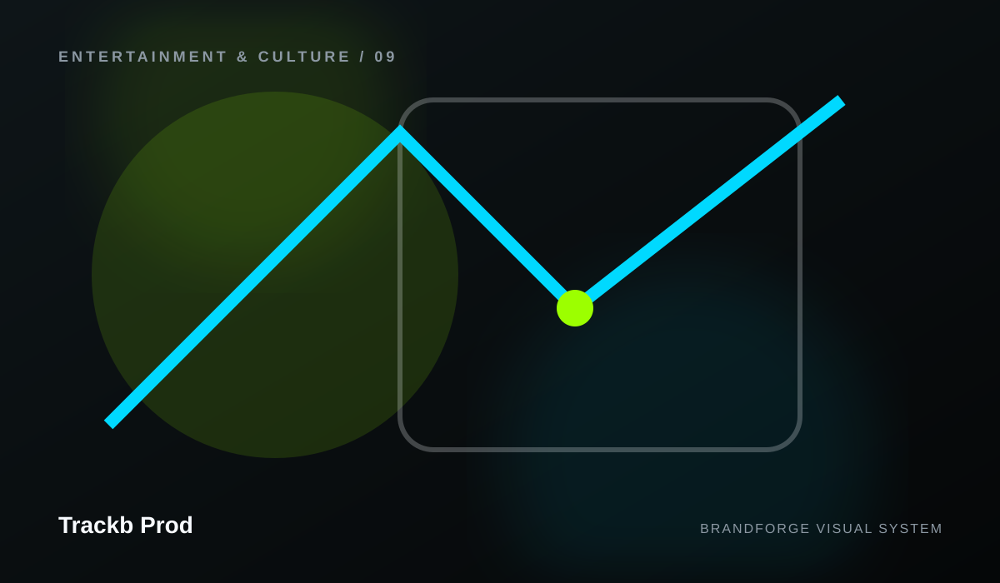

Trackb Prod
Questions, answered clearly.
Frequently asked questions about Trackb Prod and the structure of this website.

01Does BrandForge invent release rights?
No.
02Can ticketing and merchandise connect?
Yes, to real providers.
03Can video be embedded?
Yes.
04Can fan accounts be added?
Yes, with a real backend.